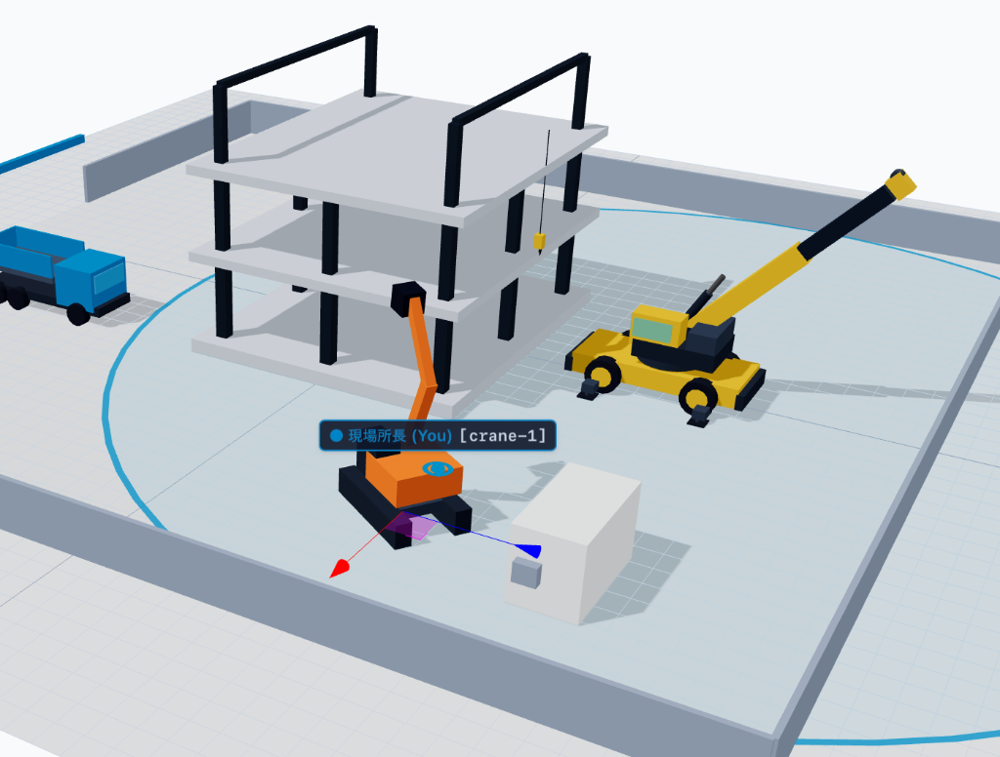

TCP/IP階層の基礎から、SSE・WebSocketの裏側まで
基本情報技術者試験やネットワーク講義で誰しも一度は暗記したモデルです。
普段私たちがWebブラウザでアクセスしている時、ブラウザが使っているのは一番上の 「HTTP（アプリケーション層 / L7）」 です。
Webコンソール（開発者ツール）でおなじみのリクエスト＆レスポンス
答え: 絶対に無理です！
👉 専用ゲームはHTTPを通さず、トランスポート層の OS生ソケット（主にUDP） を直接叩いている！
セキュリティ（同一オリジンポリシーやサンドボックス保護）のため、
ブラウザ上のJavaScriptからOSの生のTCP/UDPソケットを直接開く権限はありません。
ブラウザが話せる母国語は、あくまでも 「HTTP」 です。
HTTPの枠組みのまま、サーバーからクライアントへデータを連続ストリーミング
new EventSource('/api/stream') を呼ぶだけ。サーバーからの一方通行配信に最適！
👉 SSEは新しいプロトコルではなく、「HTTPのKeep-Aliveを終わらせない工夫」で実現されている！
「ブラウザは最初から生ソケットを開けない」
↓
「ならば、最初はHTTPとしてサーバーに接続し、
その場でソケット通信へと『プロトコルを昇格』させればいい！」
HTTPからWebSocketへ変身するハンドシェイク
EventSource や WebSocket は Authorization: Bearer ヘッダーを直接付けられない（そもそもSPAに生トークンを持たせるのもセキュリティ上危険）。
Bearer 認証基盤のままでOKEventSource を捨てて fetch() + ReadableStream で自作（ヘッダー自由）
クライアント側コードとサーバー側コードが、
実際の通信パケットとどのように対応して動いているかを画面で確認してみましょう！
EventSource と サーバー側ストリーム出力の対応101 Upgrade と 双方向メッセージ送受信の対応3D空間上で重機や仮設物の配置を全員でリアルタイム同期・共同編集！

| 比較項目 | Server-Sent Events (SSE) | WebSocket |
|---|---|---|
| 通信方向 | 単方向（サーバー → クライアント） | 双方向（全二重通信） |
| プロトコル | HTTP/1.1 または HTTP/2（標準） | 独自フレーム（ws://, wss://） |
| 実装難易度 | 超簡単（標準HTTPインフラがそのまま通る） | サーバー側でWS対応が必要 |
| 代表的な用途 | 通知、株価ティッカー、ChatGPT風テキスト生成 | チャット、オンラインゲーム、共同編集 |